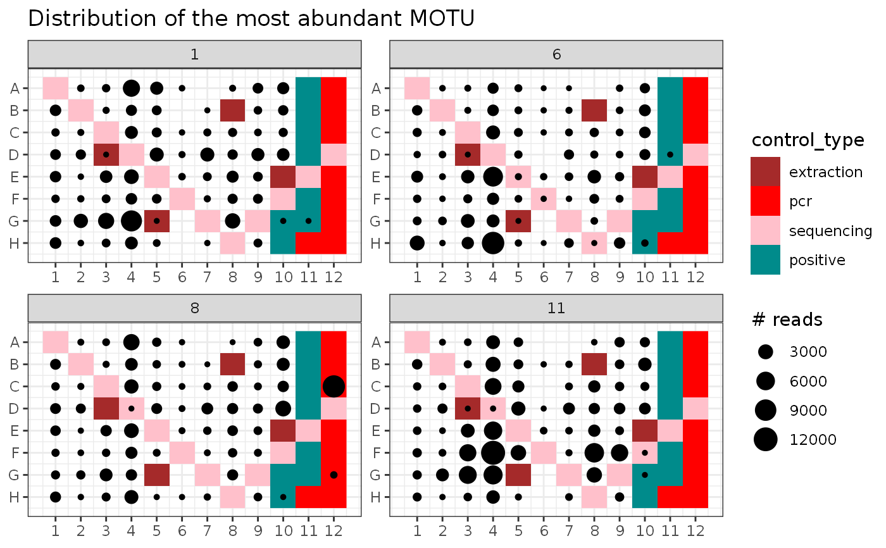
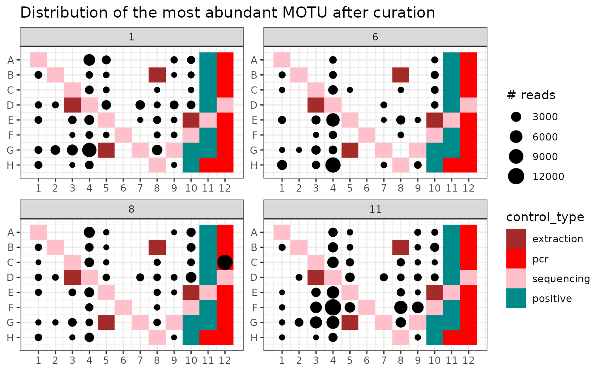

Removes reads of potential tagjumps in a metabarlist object.
tagjumpslayer(metabarlist, threshold = 0.03, method = "cut")a metabarlist object with the curated reads count matrix
Tagjumps are an important bias that lead to the presence of potentially high numbers of false positives in DNA metabarcoding data. The exact mechanism generating this bias is not yet well characterised, but is currently suspected to be generated during the PCR enrichment process of sequencing library preparation. Incomplete PCR amplification at this stage may lead to the formation of chimeras at priming sites, from fragments belonging to two different amplicons. The resulting fragment is therefore strictly identical to the genuine MOTU, but its tag combination (and hence sample origin) is an artifact. This bias is also frequency-dependent, i.e. abundant genuine MOTUs are more likely to be found at low abundances in samples where they are not supposed to be. The function aims to reduce the amounts of such false positives, by considering each MOTU separately and reducing their abundance to 0 below a given threshold of in terms of their proportion over the total MOTU abundance in the entire dataset. This reduction can be done with one of the two following methods:
method = "cut" sets the MOTU abundance to 0.
method = "substract" substracts the maximum MOTU abundance corresponding to
threshold to all abundances of that MOTU in the entire dataset.
Negative values obtained from this operation are set to 0
Carlsen, T., Aas, A. B., Lindner, D., Vrålstad, T., Schumacher, T., & Kauserud, H. (2012). Don't make a mista (g) ke: is tag switching an overlooked source of error in amplicon pyrosequencing studies?. Fungal Ecology, 5(6), 747-749.
Esling, P., Lejzerowicz, F., & Pawlowski, J. (2015). Accurate multiplexing and filtering for high-throughput amplicon-sequencing. Nucleic Acids Research, 43(5), 2513-2524.
Schnell, I. B., Bohmann, K., & Gilbert, M. T. P. (2015). Tag jumps illuminated–reducing sequence-to-sample misidentifications in metabarcoding studies. Molecular Ecology Resources, 15(6), 1289-1303.
Zinger, L., Taberlet, P., Schimann, H., Bonin, A., Boyer, F., De Barba, M., ... & Chave, J. (2019). Body size determines soil community assembly in a tropical forest. Molecular Ecology, 28(3), 528-543.
contaslayer, pcrslayer
for other data curation procedures.
data(soil_euk)
library(ggplot2)
# \donttest{
soil_euk_clean <- tagjumpslayer(soil_euk, 0.03)
# identify occurrence of the most abundant OTU
idx <- which.max(soil_euk$motus$count)
p1 <- ggpcrplate(soil_euk,
legend_title = "# reads",
FUN = function(m) {
m$reads[, idx]
}
)
p1 + scale_size(limits = c(1, max(soil_euk$reads[, idx]))) +
ggtitle("Distribution of the most abundant MOTU")

# same on clean data
p2 <- ggpcrplate(soil_euk_clean,
legend_title = "# reads",
FUN = function(m) {
m$reads[, idx]
}
)
p2 + scale_size(limits = c(1, max(soil_euk_clean$reads[, idx]))) +
ggtitle("Distribution of the most abundant MOTU after curation")

# }